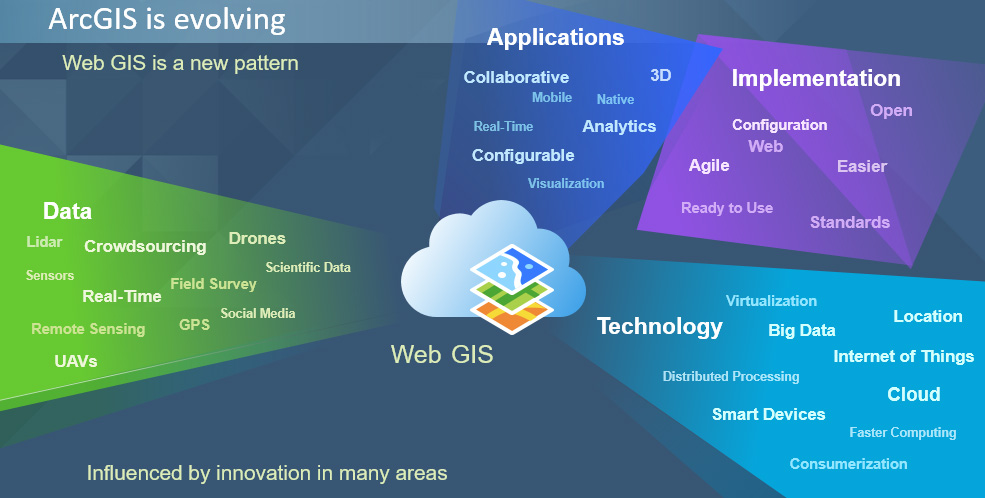

开发基于Web的地理信息系统应用，实现地图的在线浏览、查询和分析功能
我们开发基于Web的地理信息系统应用，实现地图的在线浏览、查询和分析功能。WebGIS应用具有跨平台、易部署、易维护等优点，能够满足不同用户的需求。
我们使用最新的Web技术和GIS库，开发响应式的WebGIS应用，确保在各种设备上都能获得良好的用户体验。
我们的WebGIS应用广泛应用于城市规划、环境监测、交通管理、国土资源等领域，为客户提供便捷的地图服务。

基于Web技术，可在任何设备上访问。
适配不同屏幕尺寸，提供良好的用户体验。
实现地图的在线查询和搜索功能。
提供空间数据分析和可视化功能。